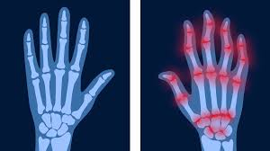

ARTRITIS
Descripción
La artritis es la hinchazón y la sensibilidad de una o más de las articulaciones. Existen diversos tipos, como la artritis reumatoide, la osteoartritis y la artritis psoriásica. Cada una tiene síntomas y tratamientos distintos.
Causas
No se conoce la causa de la artritis reumatoide. Los genes, el ambiente y las hormonas pueden tener un rol.
Síntomas
Los principales síntomas de la artritis son dolor y rigidez de las articulaciones, que suelen empeorar con la edad.
Pruebas y Exámenes
Para diagnosticar la artritis, se pueden realizar las siguientes pruebas:
- Análisis de sangre para detectar marcadores inflamatorios (como la proteína C reactiva) o anticuerpos específicos (factor reumatoide o anti-CCP).
- Radiografías para evaluar el daño en las articulaciones.
- Resonancias magnéticas (RM) para obtener imágenes detalladas de las articulaciones afectadas.
- Análisis de líquido sinovial, que se extrae de las articulaciones inflamadas para su estudio.
Tratamiento
El tratamiento de la artritis incluye una combinación de medidas para aliviar el dolor y reducir la inflamación:
- Medicamentos antiinflamatorios no esteroides (AINEs), como el ibuprofeno o naproxeno.
- Corticosteroides para reducir la inflamación severa.
- Fármacos antirreumáticos modificadores de la enfermedad (FAMEs), como metotrexato, para tratar la artritis reumatoide.
- Terapia física para mejorar la movilidad y fortalecer los músculos alrededor de las articulaciones.
- Cirugía en casos graves para reparar o reemplazar articulaciones dañadas.
Expectativas (Pronóstico)
El pronóstico varía según el tipo de artritis. La artritis degenerativa, como la osteoartritis, suele empeorar con el tiempo, mientras que la artritis reumatoide puede controlarse mejor con el tratamiento adecuado. Aunque no tiene cura, el tratamiento temprano puede ralentizar el progreso de la enfermedad y mejorar la calidad de vida.